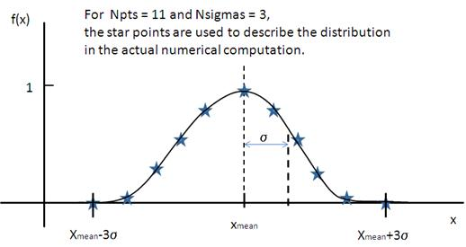

Polydisperisty and Angular Distributions
Calculates the form factor for a polydisperse and/or angular population of particles with uniform scattering length density. The resultant form factor is normalized by the average particle volume such that P(q) = scale*<F*F>/Vol + bkg, where F is the scattering amplitude and the < > denote an average over the size distribution. Users should use PD (polydispersity: this definition is different from the typical definition in polymer science) for a size distribution and Sigma for an angular distribution (see below).
Note that this computation is very time intensive thus applying polydispersion/angular distrubtion for more than one paramters or increasing Npts values might need extensive patience to complete the computation. Also note that even though it is time consuming, it is safer to have larger values of Npts and Nsigmas.
The following five distribution functions are provided;
- Rectangular distribution
- Array distribution
- Gaussian distribution
- Lognormal distribution
- Schulz distribution
The xmean is the mean of the distribution, w is the half-width, and Norm is a normalization factor which is determined during the numerical calculation. Note that the Sigma and the half width w are different.
The standard deviation is
 .
.
The PD (polydispersity) is
.

This distribution is to be given by users as a txt file where the array should be defined by two columns in the order of x and f(x) values. The f(x) will be normalized by SansView during the computation.
Example of an array in the file;
30 0.1
32 0.3
35 0.4
36 0.5
37 0.6
39 0.7
41 0.9
We use only these array values in the computation, therefore the mean value given in the control panel, for example ‘radius = 60’, will be ignored.

The xmean is the mean of the distribution and Norm is a normalization factor which is determined during the numerical calculation.
The PD (polydispersity) is
.

The mu = ln(xmed), xmed is the median value of the distribution, and Norm is a normalization factor which will be determined during the numerical calculation. The median value is the value given in the size parameter in the control panel, for example, “radius = 60”.
The PD (polydispersity) is given by sigma,
 .
.
For the angular distribution,
The mean value is given by xmean =exp(mu+p^2/2).
The peak value is given by xpeak=exp(mu-p^2).

This distribution function spreads more and the peak shifts to the left as the p increases, requiring higher values of Nsigmas and Npts.
The xmean is the mean of the distribution and Norm is a normalization factor which is determined during the numerical calculation.
The z = 1/p^2 – 1.
The PD (polydispersity) is
.
Note that the higher PD (polydispersity) might need higher values of Npts and Nsigmas. For example, at PD = 0.7 and radisus = 60 A, Npts >= 160, and Nsigmas >= 15 at least.